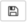

Guide to Using Jupyter Notebooks and JupyterHub
Contents
Guide to Using Jupyter Notebooks and JupyterHub#
What is Jupyter Notebook?#
The tool you’re currently using to read this document is called Jupyter Notebook, and you will be using this to complete labs and homeworks throughout the course as you write, document, and edit Python code to examine and work with data. You can also embed text and plots in notebooks, which makes it a great medium for combining code and analysis. JupyterHub is the server on which we store Jupyter Notebooks.
Much like having to learn how to use a lab for a chemistry course, you will need to learn how to use data science equipment, and JupyterHub and Jupyter notebooks are important data science lab tools. The first lab and homework will get you practice using notebooks on JupyterHub, and you’ll develop more experience with these tools throughout this course.
Without further ado, let’s explore.
Cells#
A Jupyter notebook page has cells that contain a Python program or formatted text. Each of the sections so far has been in a separate cell. You’ll learn how to create both kinds of cells and, soon, how to make useful graphs from data using Python.
Some cells are “rich text”, like this one — bold text and large titles and so on. That’s Markdown, which is a markup language. We’ll start to explore that in the next cell.
Some cells are code cells. You’ll type Python code to do data science, then you’ll run (and debug) it.
Select and move multiple cells#
You can swap the order of a cell by clicking on it and then clicking the up and down arrows in the button bar.
You can select a sequence of cells by clicking the first cell you want, then holding down your shift key and clicking the last cell in the sequence. The up and down arrows move all of them at once.
Markdown#
Double-click on this sentence. It changes the cell to a text editor. To go back to the first view, click the Run button above, as seen in the Control Panel diagram below.
Notice that the drop-down button says Markdown. Markdown is the format this cell is written in. You’ll learn how to use Markdown over the coming weeks.
Your web browser is showing you the JupyterHub@UofT website. That’s where your files, including this JupyterHub notebook, are stored. You are using your very own virtual computer running there, and only you have access to your files.
Control Panel#
Let’s get acquainted with the Jupyter notebook control panel. We will explore only the toolbar buttons, but feel free to explore the drop down menus (ex. ‘File’, ‘Edit’, …)
 Fig 1.1 - The control panel of the Jupyter Notebook
Fig 1.1 - The control panel of the Jupyter Notebook
 Fig 1.2 - The Save button
The left-most button is probably something you are already familiar with - the “Save” button. This is pretty self-explanatory, clicking on this will save all changes since your last save.
 Fig 1.3 - Creating New Cells
The “plus” button creates a new cell below the currently selected cell. By default, JupyterHub will create a code block. We’ll revisit types of code blocks soon.
Fig 1.3 - Creating New Cells
The “plus” button creates a new cell below the currently selected cell. By default, JupyterHub will create a code block. We’ll revisit types of code blocks soon.
 Fig 1.4 - Cut, Copy, and Paste Cells
The next three buttons are the cut, copy, and paste buttons, specifically for cells (i.e. it will perform the operation for the entire cell, but you can always highlight code/text and use your normal copy/paste/cut keyboard shortcuts)
Fig 1.4 - Cut, Copy, and Paste Cells
The next three buttons are the cut, copy, and paste buttons, specifically for cells (i.e. it will perform the operation for the entire cell, but you can always highlight code/text and use your normal copy/paste/cut keyboard shortcuts)
 Fig 1.5 - Rearrange Cells
The Up and Down buttons move (or swap) the position with the cell directly above or below it, respectively.
Fig 1.5 - Rearrange Cells
The Up and Down buttons move (or swap) the position with the cell directly above or below it, respectively.
 Fig 1.6 - Run, Stop, Restart, and Run All Cells
For a Markdown cell, the Run button will show the rich text view. For a Code cell, it will execute the code.
Fig 1.6 - Run, Stop, Restart, and Run All Cells
For a Markdown cell, the Run button will show the rich text view. For a Code cell, it will execute the code.
Sometimes, code takes a while to run, which might not be intended behaviour. In this case, we can use the Stop button to terminate code execution. Refresh resets all the Code cells in the notebook. The Fast Forward button first resets all the Code cells and then runs all of them in order, starting at the top.
Fig 1.7 - Specify Block Type Perhaps one of the more important functions, this dropdown menu lets you set the type of block you want (Markdown for text, Code for Python code).
Viewing your files and folders#
The program your web browser is running is talking to the JupyterHub@UofT website. That’s where your files, including this JupyterHub notebook, are stored. You are using your very own virtual computer running there, and only you have access to your files.
You can access your notebooks locally if you have some form of JupyterHub installed. You need to run another tool to see your file system. When you access your local files via JupyterHub, your interface will look something like this:
 Fig 1.8 - Our local files and directories as seen via JupyterHub (Note: you’ll have different files!)
Fig 1.8 - Our local files and directories as seen via JupyterHub (Note: you’ll have different files!)
Create your own Markdown and Code cells#
You can create your own cells. Click on this cell to select it (it should be highlighted compared to the other cells), then click the + button in the button bar above. This creates a Code cell by default. To change its type, click the cell and then click the drop-down menu where it says Code.
Markdown cell formatting#
We use hashtags (#) to create titles and headings. Particularly, the fewer the hashtags, the larger the text. So we use ‘#’ to create our titles, then ‘##’ or ‘###’ or ‘####’, etc. to make our headings and sub-headings. Double click to open the Markdown editor to see how these are specified.
Sub-heading#
sub-sub headings#
sub-sub-sub heading (do we really need more than 3?)#
Rich Text#
Markdown supports some rich text features, such as bolding, italics, and lists:
BOLD text is ‘wrapped’ by two opening and two closing underscores or by surrounding with two asterisks.
Same for italics! or, with a single asterisk, italics, perhaps?
Let’s
make
a
hey
it’s a nested list!
list
You can use +, -, >, and * for lists. Which ones you use doesn’t matter. To make a nested list, indent the sublist. Data scientists typically switch to a different list character when they indent.
If you indent plain text, it appears in fixed-width font. Nice for showing a line of Python code, or maybe some data.
Code#
You can also include Python code with pretty syntax highlighting. You’ll be working with Python on the homework this week, so just enjoy the experience for now.
# This is Python code. Surround the code with three backticks.
x = 5
Text inside single quotes is also rendered fixed width.
Double click on this cell to see how these are all specified in Markdown.
Images and Links#
The Markdown to show an image looks like this:

You’ll often want to add links to other webpages, especially once you’ve started working on your project. It looks just like embedding an image, but you leave off the initial exclamation mark. Double-click this cell to see what it looks like.
{kind=link}
Downloading a Notebook#
Each week, you will be asked to submit a homework notebook to MarkUs. Here are the steps:
Download this Jupyter notebook file to your computer:
File —> Download as —> Notebook (.ipynb).
For more information on using MarkUs this semester, check out our MarkUs Guide.